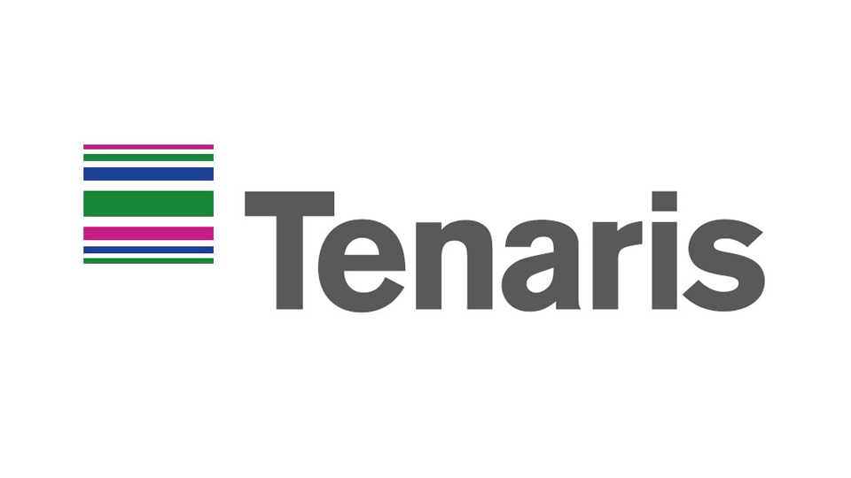
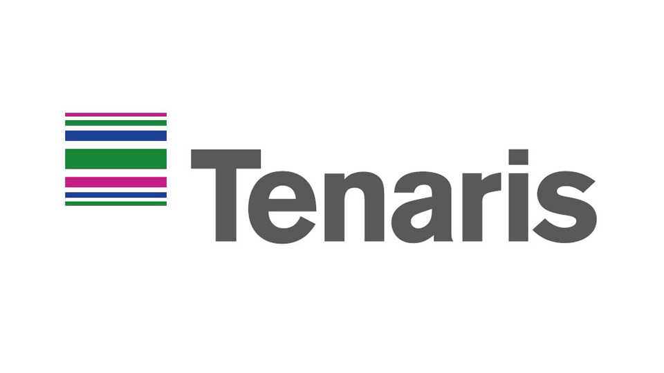
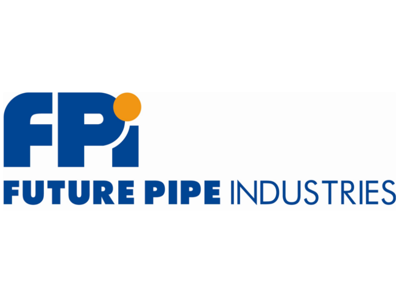

Summary
A highly skilled CNC Programmer and Wedge and Premium Connection Specialist with a proven track record of creating programs for R&D centers using CAD/CAM software. Strong expertise in troubleshooting and training on machining, gaging, and programming. Demonstrated ability to lead machining teams and manage machining schedules. Having proven track record in supporting field
service and licensing departments and have provided on-site training and support for vendors, both nationally and internationally.
Experience

PRECISION COUPLING 3/2020-Present
11200 Mesa Drive, Houston, TX 77078
Engineering Technician
Utilize Solidworks/ESPRIT to expertly create programs for the R&D Center/production
lines/mechanical testing lab, ensuring optimal results and efficient operations
Provide invaluable support to the field service and licensing departments by conducting
connection inspection, qualification, and programming with precision and
accuracy, also provided support for mechanical testing department on machining specimens.
Serve as a specialist in wedge threads and complex premium threads, utilizing
extensive knowledge and experience to ensure optimal performance
Performed license qualification and provided on-site training & support for venders (Stewart
Tubular, K&B, OFSI, Lincoln manufacturing, Texas Pipe Works, Pinnacle
Manufacturing, Superior Threaded Products, Custom Thread Inc, AMTEX, American
Cap, Patriot Premium Threading Services)
Machine working with: Mill-Turn Mazak QT450M, Dual Turrets MORI SEIKI NZL 6000 , Dual Turrets OKUAMA LOC350, 4 Axis DMG Mori Mill,
Kingston, Doosan Puma and many similar types of machines..jpg) 

TMK IPSCO R&D CENTER
(TENARIS IPSCO) 9/2015-3/2020
10120 Houston Oaks Drive, Houston, TX 77070
CNC Programmer/Machinist
Led machining operations as CNC Machinist Leadman, expertly creating programs using
both GibbsCAM and ESPRIT
Effectively managed the machining schedule, ensuring timely completion of all jobs while
maintaining exceptional quality standards
Provided comprehensive support to the field service and licensing departments by
conducting connection inspection and qualification, troubleshooting machining
issues, and delivering high quality training on programming, machining, and gaging
Provided support for mechanical testing department
Operated and inspected a variety of machines, including MAZAK SLANT TURN 600, Haas TL10,
and Haas VF3, and served as a specialist in both wedge threads and complex
premium thread
Performed license qualification and provided
on-site training & support in Orsk-Russia region
VALLOUREC 9/2014-9/2015
14333 Sommermeyer St, Houston, TX 77041
CNC Machinist
Read blueprints and set up machines to meet specific requirements without supervision,
effectively utilizing a variety of machines, including OKUMA LU35, MAZAKTROL
SLANT TURN 600M, and T PLUS
Specialized in wedge and complex premium threading, skillfully troubleshooting programming and
machine issues as needed
U.S STEEL OILWELL SERVICES, LLC 2/2014-9/2014
9518 E Mt Houston Rd, Houston, TX 77050
CNC Machinist
Read blueprints and set up machines to meet specific requirements without
supervision, effectively utilizing a variety of machines, including MORI SEIKI
NZL 6000 (4 AXIS), OKUAMA LOC350 (4 AXIS), and MAZAKTROL T PLUS
Demonstrated expertise in both API and premium threading

FUTURE PIPE INDUSTRY. 6/2012 –1/2014
11811 Proctor St, Houston, TX 77038
CNC Machinist
Set up and operated machines, skillfully adjusting and editing programs to meet requirements for internal and
external API tapered threading
Read and interpreted blueprints and drawings, expertly setting up tools and machines to ensure optimal results
Utilized a variety of machines, including Wasino SL6 and Mori Seiki SL3, SL6, and SL7